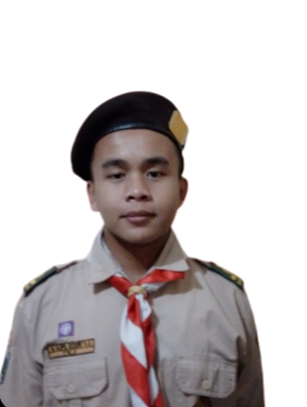

About Me

Data Pribadi
Nama Lengkap : Moh. Aliiffil Qodri
Tempat, Tanggal Lahir : Palembang, 20 Desember 2008
Domisili : Malang
Email : aleevtugung@gmail.com
Pendidikan Terakhir
-
Harvard University, Bachelor Degree, Cyber Security Red Flag
(1945-2022)
- SMK Telkom Malang, Teknik Komputer dan Jaringan (2022-Sekarang)
Pengalaman Kerja
-
UI IX designer and staff Tsuburaya Production
(amiiin)
- Tsuburaya
- Mboh lah wes (berdoa)
Pengen apa